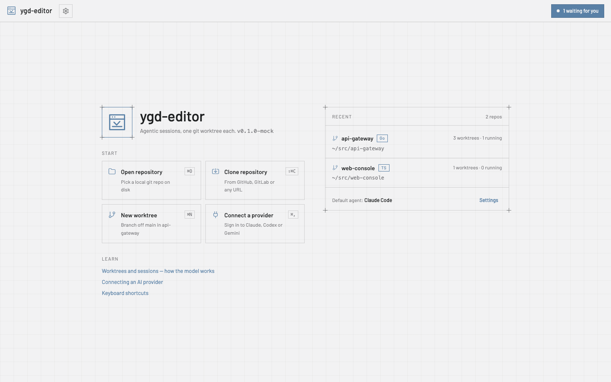
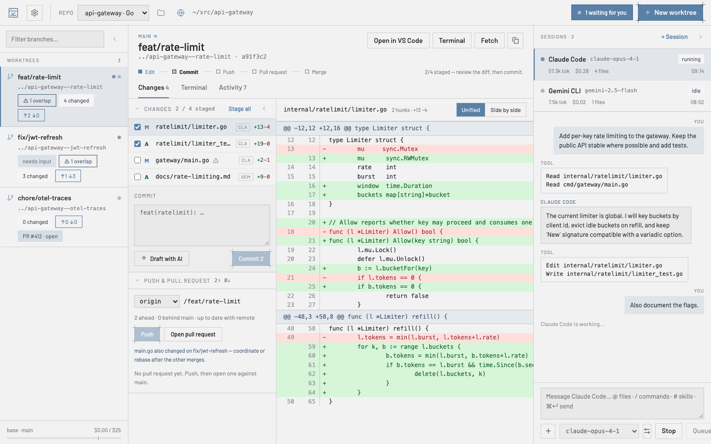
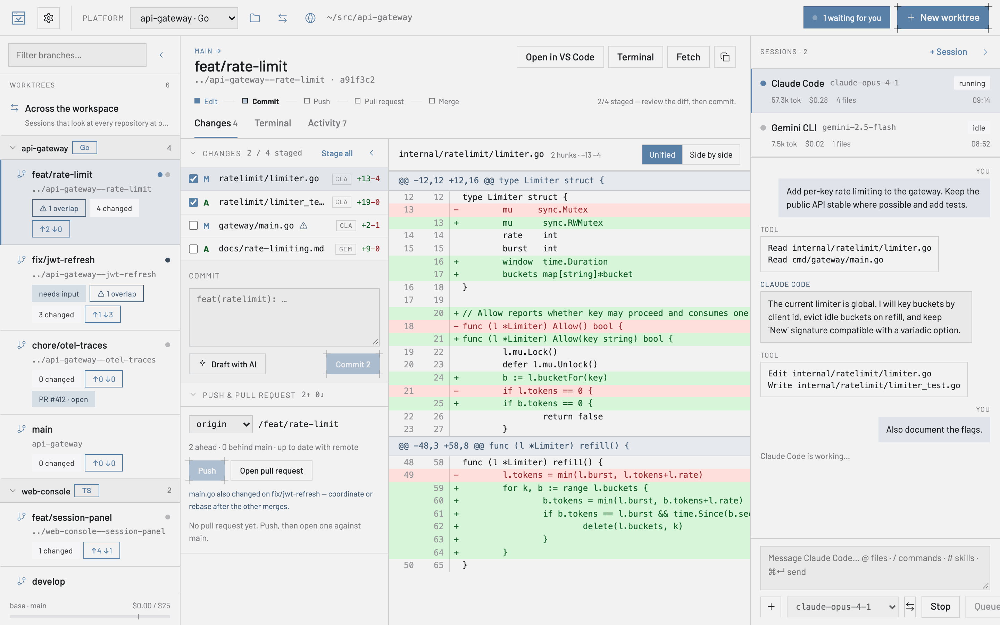
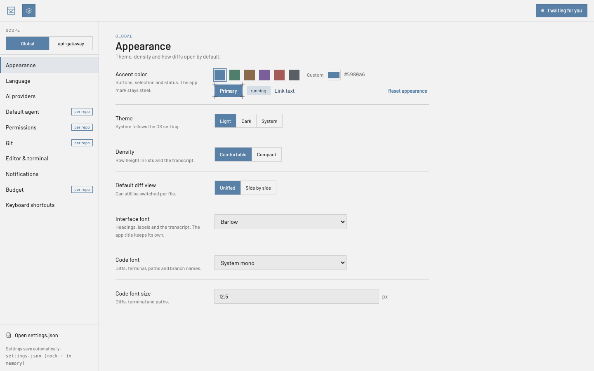

User guide
Everything you need for the first afternoon with ygd-editor, in plain words. Ten minutes to read, and you can come back to any section from the list.
The idea in one minute
A git worktree is a second folder for the same repository, checked out on another branch. Instead of switching branches in one folder — and stashing, rebuilding and losing your place every time — you keep one folder per task.
ygd-editor is built around that: the left panel lists your worktrees, the middle shows what changed in the one you picked, and the right runs an AI agent inside it. Two agents on two tasks work in two folders and never collide. When one is waiting for an answer, the header inbox tells you.

Your first ten minutes
- Open a repository. On the start page choose Open repository and pick a folder that already has git in it, or Clone repository with a GitHub, GitLab or any git URL. Recent repositories stay on the start page.
- Create a worktree. New worktree (⌘N) suggests a branch name from the task and a folder to put it in; both are yours to rename to whatever convention you use. Git does not allow spaces in a branch name, so they become dashes and the dialog shows you the result before creating anything. Where worktrees go on disk, and an optional suggested prefix, are Settings › Git.
- Start a session. + Session in the right panel picks an agent and a model; the default agent is Settings › Default agent. Type what you want in the composer.
@attaches files or context such as the current diff,/runs the agent’s commands,#its skills. ⌘↵ sends. - Let it work — or stop it. The transcript shows every tool the agent uses. When it needs permission for something you have not pre-approved, the session turns to waiting, the header inbox counts it, and you allow or deny — “Always allow” remembers your choice for that worktree. Stop interrupts; prompts you type while it works are queued.
- Review the changes. The Changes tab lists every touched file with who changed it. Click a file for the diff; select lines and choose Explain or Ask to change to send them back to the agent. A warning marks files another worktree of the same repository also touches.
- Commit, push, open the PR. Tick the files to stage, write the message or Draft with AI, Commit. Push sets the upstream; Open pull request fills title, body (drafted from the diff if you want), draft flag, reviewers and labels, and hands off to
ghorglab. The worktree card then shows the PR and its checks.

Day to day
The main worktree — the folder you opened the repository at — is listed with the others and is the one new worktrees branch from. Select it and click its branch name in the header: a search box drops down over every branch — yours, or one that only exists on the remote, which it checks out as a new tracking branch. Type to narrow it, arrow keys and Enter to switch. A branch another worktree already holds is listed but greyed out, because git allows a branch in one worktree at a time.
Update from base on a worktree fetches and rebases it on the base branch; conflicts stop with the files listed, you resolve them, stage and Continue. Fetch refreshes ahead/behind counts. The Terminal tab is a real shell in the worktree folder; Activity is the timeline of what happened there — commits, pushes, sessions — and survives restarts.
Handing off. A session can move to another worktree from its menu, transcript included, when you realise the work belongs on another branch.
Removing a worktree ends its sessions, archives their logs and forgets its permission rules; the branch stays unless you delete it. Settings › Git can delete the worktree by itself after its PR merges.
Multiple repositories. Open as many as you like; the header switches between them, and the inbox counts waiting sessions across all of them.
Working on several repositories: workspaces
A workspace is a named set of folders the app holds open together. A gateway, a web console and a folder of notes are often one piece of work, and a question about one of them is usually answered in another — a workspace is how you tell the app they belong together.

Making one. Open a second repository while one is already open and the app asks where it goes: add it to what you are working in, start a new workspace with both, or open it on its own. Escape means “on its own”. You can also start one from the start page with New workspace, and add or remove folders later from the workspaces button in the header. Removing a folder from a workspace never deletes anything — only the set changes.From VS Code. If your team already keeps a.code-workspace file, Open workspace file… reads it: the same folders, in the same order, named the way VS Code names them. Comments and trailing commas in the file are fine. Folders that are not git repositories are kept — they just have no worktrees — and a folder that has gone missing is reported rather than quietly dropped. Save to file writes it back, leaving the parts the app does not use untouched, so the same file keeps working in both tools.What the sidebar shows. Worktrees grouped by repository, each group foldable, with the filter matching a branch or a repository name so you can find a branch without remembering where it lives. A folded group still shows what is running inside it, and still says when a session is waiting. One repository shows no groups at all.What the agents can see. A session still runs in its worktree — that is where git and every relative path belong — but it can read the workspace’s other folders too, so “where does this call end up?” can be answered from either side. A session that only reads is still only allowed to read, everywhere. There is also a row above the groups, Across the workspace, for sessions that belong to no single worktree: ask those the questions that span the whole stack. They have no branch, no changes and no terminal, because those belong to a worktree.Settings. Three levels now: Global, the workspace, then a single repository. The default agent, the permission preset and the base branch are usually a property of the stack rather than of each repository in it, so set them once on the workspace; a repository that needs something different still overrides it. The scope selector in Settings picks the level, and a section that is not overriding says where its values are coming from.The app remembers each workspace separately: come back to one and you land on the repository, worktree and panel layout you left it in.
Agents and providers
ygd-editor does not talk to any AI service itself. It runs the command-line tools you already have — Claude Code, Codex, Gemini CLI — with your own accounts, so your usage, billing and data terms are exactly the ones you agreed with those providers.
Settings › AI providers connects each provider with your own account: Connect opens the provider’s sign-in page in your browser, and the card then shows the account, the plan and Switch account / Disconnect / Test connection. Codex and Gemini CLI ship inside the app, so there is nothing to install; if you have your own copy installed, the app uses that one. Claude Code’s licence does not allow shipping it, so its card offers Install Claude Code, which runs Anthropic’s official installer in the card’s terminal, into your home folder, without an administrator password. The default agent and model, and the permission preset, can differ per repository.
Permissions
Agents ask before doing things you have not pre-approved. Settings › Permissions has three presets — strict (read only), balanced (read and edit files, ask for anything else) and yolo (also run commands, use the web and push) — plus individual switches for reading, editing, running commands, web access, pushing and deleting. Whatever the preset, an agent can never delete without asking unless you turn that on.
When a request comes in, Allow and Deny answer once; Always allow remembers that tool for that worktree, and the rule goes away with the worktree.
Notifications, inbox and budget
Settings › Notifications chooses when the app pings you: when a session is waiting, when one finishes, when pull-request checks change. Notifications only show while the window is not in front, a click on one jumps to the session, and the dock or taskbar badge can count waiting sessions.
The budget bar at the bottom of the left panel is today’s real spend across every session, taken from the agents’ own usage reports. Settings › Budget sets a daily and a per-session limit, a warning threshold, and whether sessions pause when the limit is reached.
Settings
Settings (⌘,) are grouped by topic. Appearance sets theme, accent colour, density and fonts; Language switches the interface between English and Spanish. Several sections carry a per repo badge: with a repository selected at the top you can override those for that repository only.
Everything saves automatically to settings.json in the app’s folder in your home directory; Open settings.json edits the raw file with validation, and the header shows when it was last written.

Updates
Shortly after launch the app checks this site’s releases, downloads a new version in the background and offers Restart to update. Settings › Notifications has the Offer updates switch, a Check for updates button with the time of the last check, and Install updates automatically: with it on, a downloaded update restarts the app by itself after a 15-second countdown you can cancel — only when no session is running or waiting; otherwise it installs when you quit. The first launch after an update says which version you are on and links to what changed.
Keyboard shortcuts
| ⌘O | Open repository |
| ⇧⌘C | Clone repository |
| ⌘N | New worktree |
| ⌘, | Settings |
| ⌘↵ | Send the prompt |
On Windows and Linux read ⌘ as Ctrl. Every shortcut can be changed under Settings › Keyboard shortcuts.
When something goes wrong
macOS says it could not verify the app (Move to Trash / Done). Click Done, then System Settings › Privacy & Security › scroll to Security › Open Anyway, and confirm with your password. On macOS 14 or older, right-click › Open does it in one step. If it still refuses, in Terminal: xattr -d com.apple.quarantine /Applications/ygd-editor.app. If it says the app is damaged, the download was corrupted: download it again and compare it against SHA256SUMS.txt.
Windows blocks the installer. SmartScreen › More info › Run anyway. The publisher should read ygd-editor release signing.
The AppImage does not start. Run it with --appimage-extract-and-run, or install libfuse2.
A provider shows “Not installed”. Codex and Gemini CLI come with the app, so that means the app’s copy is damaged: reinstall the app. For Claude Code, click Install Claude Code on its card; if you installed it yourself, open a terminal, check that claude --version works, then Settings › AI providers › Rescan.
Git errors. The app explains the usual ones in one sentence — credentials, a remote that moved on, a lock file, a dirty tree, conflicts — and keeps the full output in the worktree terminal.
No update appears. Check Settings › Notifications › Offer updates, then Check for updates; the app needs to reach github.com.
Anything else: open an issue with what you did, what you expected and what happened.
Privacy and security
Everything runs on your computer. The app itself connects to the internet for one thing: checking this site’s releases for updates. Agents talk to their providers with your accounts; git talks to your remotes with your credentials. Provider tokens the app keeps are stored in the operating system’s keychain. The interface runs sandboxed, every request that names a path is checked against the repositories you actually opened, and no command is ever built from a shell string.
To check that a download is really ours, see Is my download genuine? on the download page.